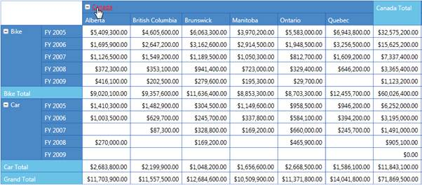
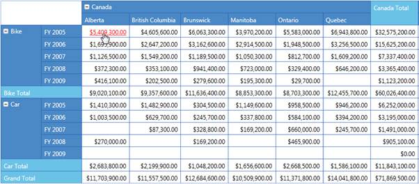

The PivotGrid for Silverlight allows Hyperlinking of cells to retrieve a detailed description about a particular cell. The Hyperlink Cells property of PivotGrid generates a separate event called HyperLinkCellClick for the clicked cell and the HyperLinkCellClickEventArgs will return the clicked PivotCellInfo.
Hyperlink Cell’s property can be applied to the following cells.
· Column Header
· Row Header
· Summary Header
· Summary Cell
· Value Cell
Adding Hyperlink Cells
You can enable a cell present in the Grid as a Hyperlink by setting the IsHyperlinkCell property of that cell style to True.
Example: To make a column header cell as a hyperlink, set PivotGrid.ColumnHeaderStyle.IsHyperlinkCell = True.
The property usage is illustrated in the code given below.
|
[C#] // Instantiating PivotGridControl. PivotGridControl PivotGrid1 = new PivotGridControl(); // Adding PivotRows. PivotGrid1.PivotRows.Add(new PivotItem { FieldHeader = "Product" }); // Adding PivotColumns. PivotGrid1.PivotColumns.Add(new PivotItem { FieldHeader = "Date" }); // Adding PivotCalculations. PivotGrid1.PivotCalculations.Add(new PivotComputationInfo { FieldName="Amount" });
// To Enable Hyperlink for Column Header. this.PivotGrid1.ColumnHeaderCellStyle.IsHyperlinkCell = true; // To Enable Hyperlink for Row Header. this.PivotGrid1.RowHeaderCellStyle.IsHyperlinkCell = true; // To Enable Hyperlink for Summary Header. this.PivotGrid1.SummaryHeaderStyle.IsHyperlinkCell = true; // To Enable Hyperlink for Summary Cell. this.PivotGrid1.SummaryCellStyle.IsHyperlinkCell = true; // To Enable Hyperlink for Value Cell. this.PivotGrid1.ValueCellStyle.IsHyperlinkCell = true;
|
|
[VB]
' Instantiating PivotGridControl. Dim PivotGrid1 As PivotGridControl = New PivotGridControl() ' Adding PivotRows. PivotGrid1.PivotRows.Add(New PivotItem With {.FieldHeader = "Product"}) ' Adding PivotColumns. PivotGrid1.PivotColumns.Add(New PivotItem With {.FieldHeader = "Date"}) ' Adding PivotCalculations. PivotGrid1.PivotCalculations.Add(New PivotComputationInfo With {.FieldName="Amount"})
' To Enable Hyperlink for Column Header. Me.PivotGrid1.ColumnHeaderCellStyle.IsHyperlinkCell = True ' To Enable Hyperlink for Row Header. Me.PivotGrid1.RowHeaderCellStyle.IsHyperlinkCell = True ' To Enable Hyperlink for Summary Header. MePivotGrid1.SummaryHeaderStyle.IsHyperlinkCell = True ' To Enable Hyperlink for Summary Cell. Me. PivotGrid1.SummaryCellStyle.IsHyperlinkCell = True ' To Enable Hyperlink for Value Cell. Me.PivotGrid1.ValueCellStyle.IsHyperlinkCell = True |

Figure 13: PivotGrid with Hyperlink Column Header
Figure 14: Pivot Grid with Hyperlink Row Header

Figure 15: PivotGrid with Hyperlink Value Cell
Sample Link
..\..\ Syncfusion\BI\Silverlight\Syncfusion.PivotGrid.Silverlight.Samples\Syncfusion.PivotGrid.Silverlight.Samples\Samples\HyperlinkCellDemo